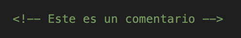

Un comentario en HTML es una parte del código que no se muestra en la página web cuando la visitas. Los comentarios son invisibles para los usuarios, pero son muy útiles para los desarrolladores. Sirven para dejar notas, explicar el código o desactivar temporalmente algunas partes del código sin eliminarlas.
Se escriben usando la siguiente estructura:

Todo lo que esté dentro de <!-- y --> será ignorado por el navegador, lo que significa que no se mostrará en la página web.